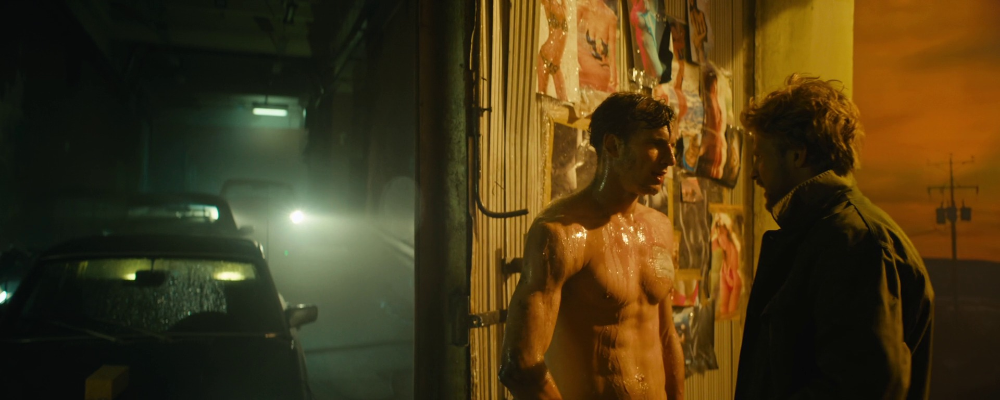
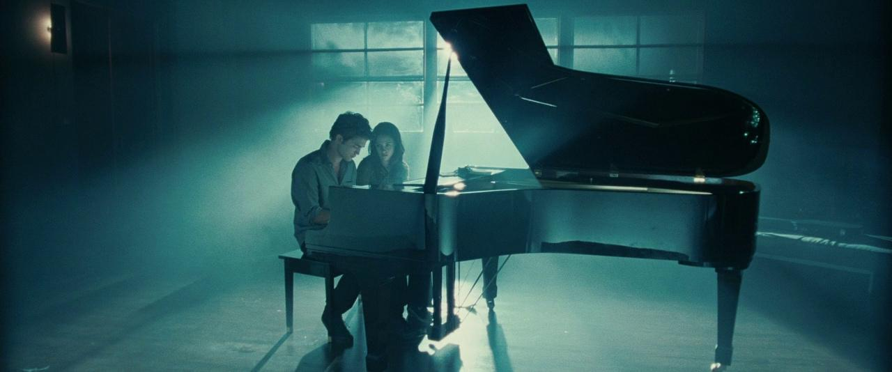
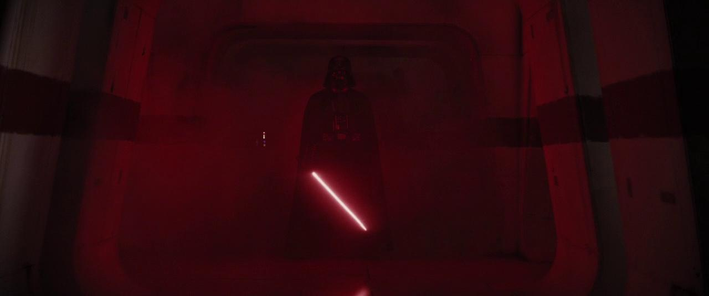
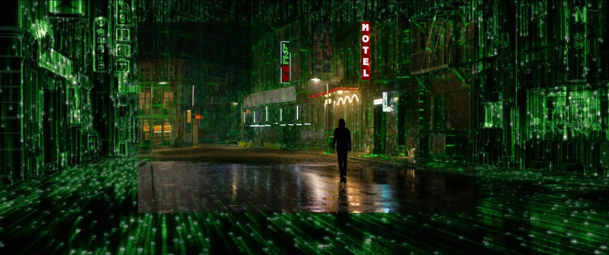
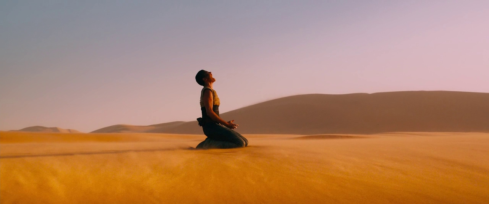
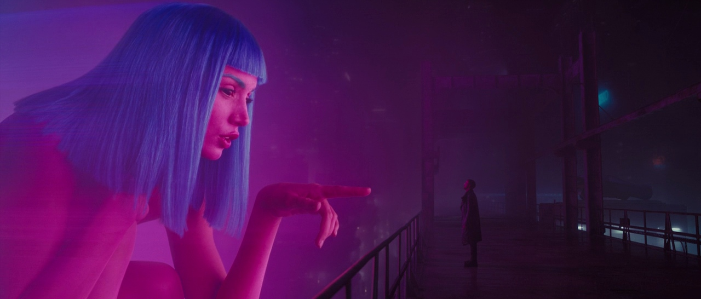

Before: Low Key
Heavier shadows create mystery, tension, and visual isolation around the subject.
Interactive Scene Transformations
Drag the slider to reveal how a brighter treatment shifts mood, focus, and emotional tone.

Heavier shadows create mystery, tension, and visual isolation around the subject.
Increased fill light opens facial detail and makes the frame feel safer and more neutral.
| Color | Example Image | Emotional Effect |
|---|---|---|
| Blue/Cyan |  |
Often represents isolation, sadness, or coldness. It is frequently used for night time scenes, creating a sense of calm or. |
| Red |  |
Signifies high-intensity emotions, including aggression, danger, passion, rage, and love. It is often used to make the viewer feel uneasy or to highlight intense moments. |
| Green |  |
Suggests nature, sickness, fear, corruption, or a surreal, unsettling, or dangerous atmosphere. |
| Orange |  |
Used to express warmth, energy, and enthusiasm, often creating a sense of excitement or urgency. |
| Pink/Magenta |  |
Often used to evoke innocence, femininity, or a dreamy, romantic atmosphere. |